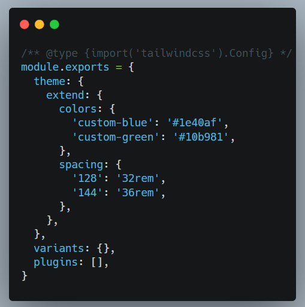

Tailwind CSS nima?
U dastlab 2017-yilning 1-noyabrida Adam Wathan va uning hamkasblari tomonidan chiqarilgan. Tailwind CSS — bu utility-first (foydali funksiyalar birinchi o‘rinda) CSS framework bo‘lib, u sizga HTML kodingizni tez va samarali tarzda styling qilish imkonini beradi. Tailwind'ning asosiy farqi — unda siz elementlar uchun CSS yozish o'rniga, oldindan tayyorlangan utility-klasslardan foydalanasiz. Bu klasslar ma'lum bir stilni bildiradi, masalan, mt-4 (margin-top: 4rem) yoki text-center (matnni markazlash) kabi.
Tailwind CSS'ning asosiy xususiyatlari:
-
1. Utility-first (foydali funksiyalar birinchi): Tailwind CSS foydalanuvchilarga katta komponentlar
o‘rniga kichik utility-klasslarni taklif qiladi. Har bir klass muayyan bir CSS xususiyatini
ifodalaydi va bu klasslar bilan oson boshqarish va sozlash imkoniyatiga ega bo‘lasiz.

- 2. To‘liq moslashuvchanlik: Tailwind sizga to‘liq moslashuvchanlik beradi. Siz o‘zingizga kerak bo‘lgan barcha stylingni to‘g‘ridan-to‘g‘ri HTML kodingizda utility-klasslar orqali berishingiz mumkin.
- 3. Zero configuration (noldan konfiguratsiya qilish kerak emas): Tailwind CSS bilan siz asosiy dizayn konfiguratsiyalariga muhtoj emassiz. Framework ichida tayyorlangan klasslar orqali butunlay stylingni amalga oshirishingiz mumkin.
-
4. Responsive design osonlikcha: Tailwind CSS responsiv (moslanuvchan) dizaynni juda osonlashtiradi.
Masalan, ekran o‘lchamlariga qarab ma’lum klasslarni qo‘llash imkoniyatini beradi:

@apply
Component-based dizayn: Tailwind'da siz utility-klasslarni komponentlar orqali ham qayta
ishlatishingiz mumkin. Masalan, Tailwind CSS’ning @apply direktivasidan foydalanib, qayta
ishlatiladigan komponentlar yaratishingiz mumkin:

@layer
Tailwind CSS-da @layer direktivasi sizga CSS-ni turli layerlarda (qatlamlarda) yozish imkonini beradi. Bu direktiva yordamida siz Tailwind CSS'ning mavjud qatlamlariga o‘z stylingingizni qo‘shishingiz yoki override (ustidan o‘zgarish kiritish) qilishingiz mumkin. Tailwind CSS uchta asosiy qatlamni o‘z ichiga oladi:
- 1. Base: Bunda asosiy elementlar uchun default styling yoziladi (masalan, body, h1, p, va hokazo).
- 2. Components: Bu qatlamda qayta ishlatiladigan komponentlar (masalan, button'lar, card'lar) uchun styling mavjud.
- 3. Utilities: Tailwind CSS'da utility-klasslarni o‘z ichiga olgan asosiy qatlam. Siz bu qatlamga yangi utility-klasslar qo'shishingiz mumkin.
Component-based dizayn: Tailwind'da siz utility-klasslarni komponentlar orqali ham qayta
ishlatishingiz mumkin. Masalan, Tailwind CSS’ning @apply direktivasidan foydalanib, qayta
ishlatiladigan komponentlar yaratishingiz mumkin:

peer
peer — bu CSS va Tailwind CSS'da ko‘pincha qo‘llaniladigan konsept bo‘lib, u asosan bir elementning
boshqa bir elementga ta'sirini ifodalash uchun ishlatiladi. Tailwind CSS'da peer klassi, CSS'da esa peer
selektori yordamida bir elementning holatiga qarab boshqa elementlarning stilini o‘zgartirish mumkin.
Tailwind CSS'da peer classi yordamida siz bir elementning holatini (masalan, checkbox yoki radio button)
asos qilib, uning o‘zgarishi boshqa elementlarning stiliga ta'sir ko‘rsatishini amalga oshirishingiz
mumkin. Bu, odatda, interaktiv holatlar va dinamik dizayn uchun ishlatiladi.

- 1. peer: Checkboxga peer klassini berish orqali, checkbox (yoki boshqa interaktiv element) asosida stil o‘zgarishlarini ko‘rsatishingiz mumkin.
- 2. peer-checked:text-green-500: Bu holatda, peer klassiga ega bo‘lgan element (checkbox) belgilangan bo‘lsa, label elementining matn rangi yashil bo‘ladi.
To'g'ridan-to'g'ri child larni uslublash (*-{modifier})
theme()
Tailwind CSS'da theme funksiyasi, ilovangizning dizayn tizimini sozlash va kengaytirish uchun ishlatiladi. Bu sizga ranglar, oraliqlar, tipografiya va boshqa dizayn xususiyatlari uchun maxsus qiymatlarni belgilash imkonini beradi. Bu sozlash tailwind.config.js faylida amalga oshiriladi.
- 1. Standart Tema: Tailwind CSS bilan birga keladigan standart tema, ranglar, oraliqlar, tipografiya va boshqalar uchun oldindan belgilangan qiymatlarni o‘z ichiga oladi.
- 2. Temani Moslashtirish: Temani sozlash uchun tailwind.config.js faylini tahrir qilishingiz mumkin. Bu standart qiymatlarni o‘zgartirish, mavjudlarini kengaytirish yoki yangilarini qo‘shishga imkon beradi.
- 3. Temani Kengaytirish: Temani kengaytirish orqali yangi utility klasslarini qo‘shishingiz mumkin, bu eski qiymatlarni o‘zgartirmaydi. 